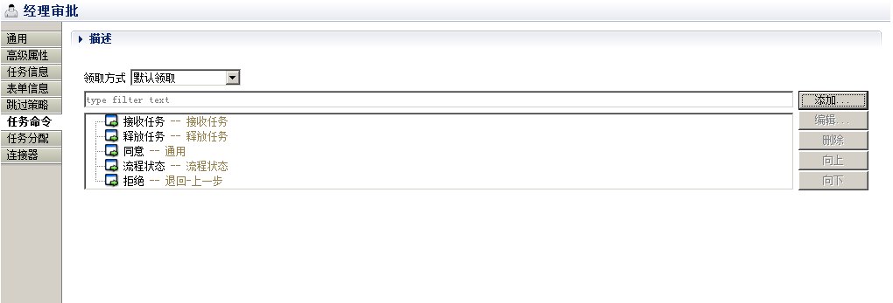
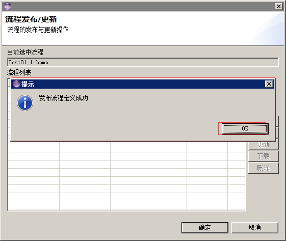
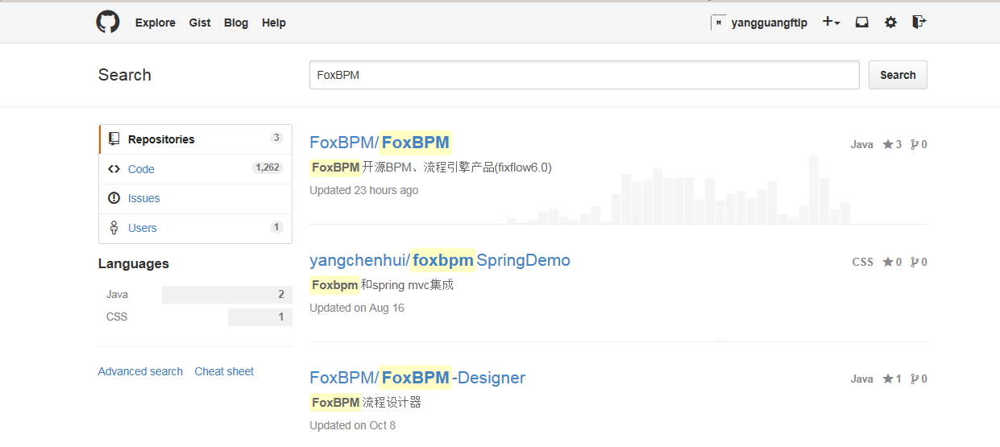
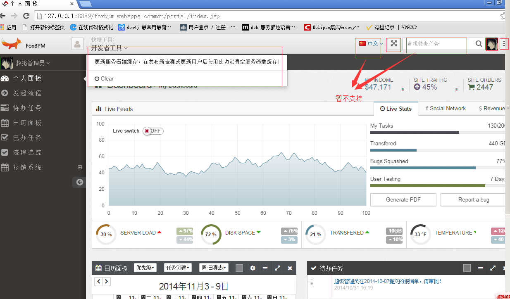
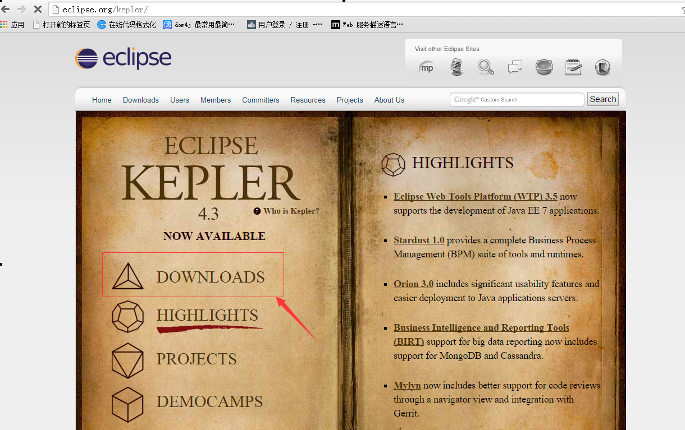
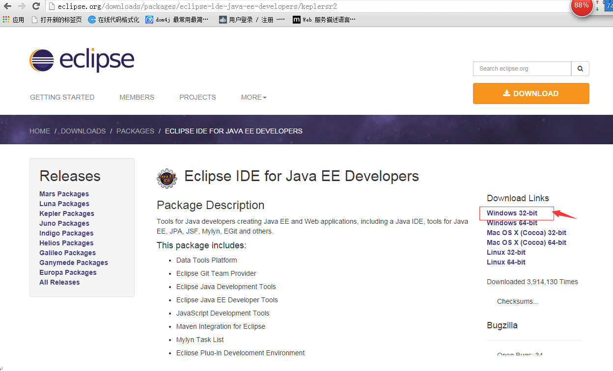
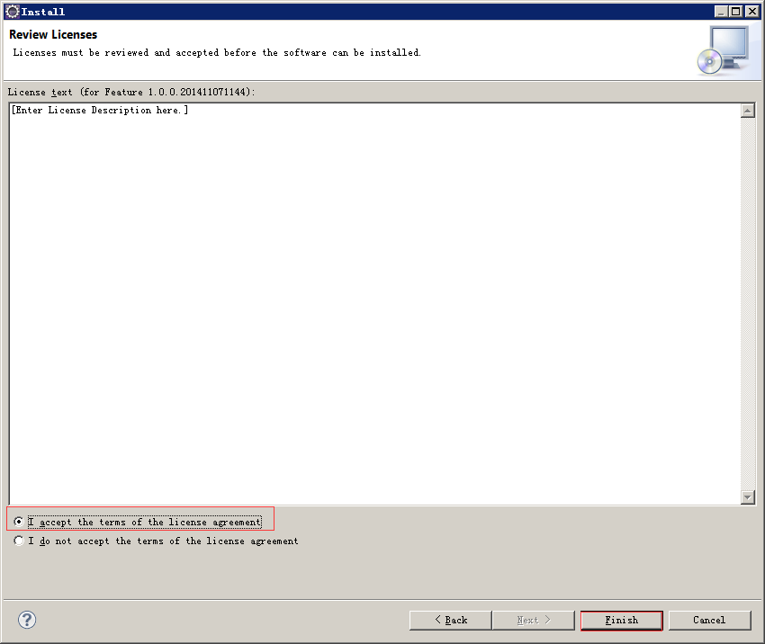
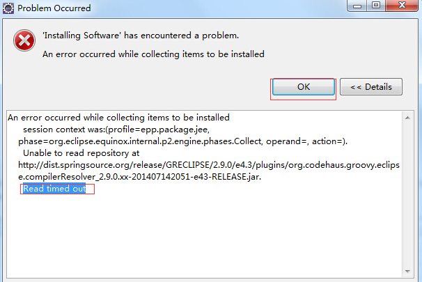
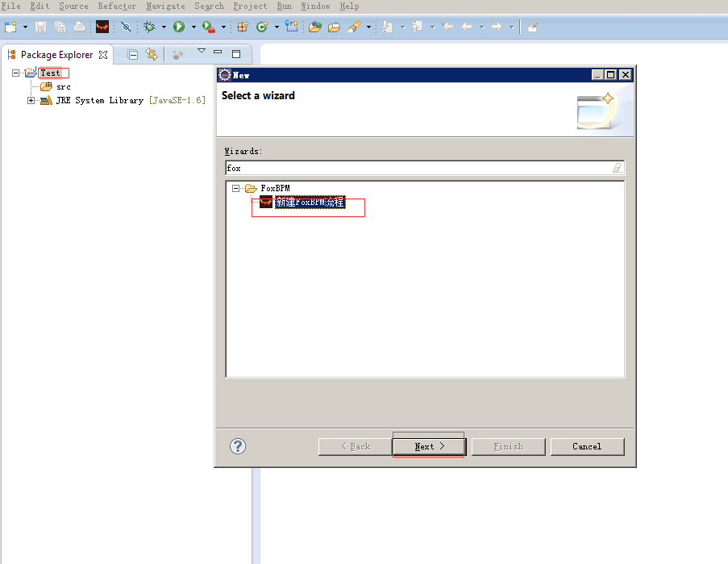

FoxBPM是一款开源的基于BPMN2.0标准的工作流引擎,由FoxBPM开源联盟组织(FoxBPM OpenSource Union) 进行社区化管理, 引擎底层直接支持BPMN2.0国际标准, 吸纳了 jBPM3 、 Activiti5、BonitaBPM 等国际开源流程引擎的精髓, 同时提供了强大的中国式流程流转处理,引擎采用微内核+插件形式设计,提供灵活的扩展模式, 建模采 用基于BPMN2.0标准的Eclipse设计器和基于Web的流程设计器,不仅仅为审批流程提供了解决方案, 同时还为复杂业务流程编排提供了强大的支持。 FoxBPM本身并不具备完整的开发平台功能,它的定位是专门用于集成到现有系统的引擎。
FoxBPM Engine 使用了 Apache V2 license 授权协议
FoxBPM引擎代码托管在GitHub平台中,采用git来管理源代码,可以通过Git工具拉取源代码 GtiHub-FoxBPM
FoxBPM引擎支持 jdk1.5以及1.5以上版本jdk,下载地址为 Oracle Java SE downloads
FoxBPM设计器插件能够在 Eclipse Juno、Kepler SR2、Luna版本中运行. Eclipse Kepler SR2 Eclipse Juno SR2
在安装FoxBPM设计器插件之前先要添加Graphiti和Groovy站点信息
http://download.eclipse.org/graphiti/updates/0.10.2
在安装FoxBPM设计器插件之前先要添加Groovy站点信息
Luna:http://dist.springsource.org/release/GRECLIPSE/e4.3/
Kepler:http://dist.springsource.org/release/GRECLIPSE/e4.3/
Juno:http://dist.springsource.org/release/GRECLIPSE/e4.2/
满足上面两个设计器要求之后就可以安装 FoxBPM的 Eclipse 插件了FoxBPM Eclipse Plugin 下载地址
可以通过GitHub平台提供的issues功能来提交问题和bug。 GtiHub issues.
本章节适合所有读者，不过在快速入门之前需要用户有一定的基础能力，起码要知道JDK的环境变量的配置。 用户首先需要下载FoxBPM完成整版设计器、FoxBPM6.0Release包，支持的运行环境为JDK 5+、Tomcat 6.0， FoxBPM暂时支持的数据库有mysql、oracle、sqlserver，用户可以选择其中的任意一种进行数据库环境的搭建。 通过本章节用户可以获取并部署好FoxBPM的Web服务，设计简单报销流程，并能在web上正确运行。 通过本章节用户将会了解简单的流程设计和发布，用户若想和应用系统进行集成还需要对其他章节或文档进行学习。
这里只介绍FoxBPM项目的部署，对于其他系统怎么集成FoxBPM这里不做介绍，用户可以参照集成相关文档。
首先介绍一下FoxBPM项目，这是一个采用spring框架构建的简单web示例，集成了流程引擎。其功能 包括流程定义的查询展示、流程定义启动、待办任务的查询、任务执行、历史任务查询、流程图展示、流程追踪、基于日历面板进行任务展示等。
用户在基于FoxBPM流程引擎构建自己的系统时，可以参照这个示例对流程引擎相关API的调用。用户也可以基于这个项目构建自己的流程管控中心。
流程引擎有自己的运行时仓库，所以在部署项目之前首先需要将数据脚本导入到本地数据库。打开FoxBPMRelease/database目录，选择适合自己的数据库脚本，在对应工具里执行。 默认脚本会向AU_USERINFO表插入一条数据用来进行系统登录，用户名为“admin”，密码为“1”
FoxBPM引擎支持JDK1.5以上开发环境，相关信息可以参照“项目介绍”文档，这里以apache-tomcat-6.0.39\jdk1.6.0_43为环境，保证tomcat正常启动即可。
将FoxBPMRelease\wars\foxbpm.war部署包拷贝至apache-tomcat-6.0.39\webapps目录下，然后启动tomcat服务，webapps目录下会自动生成FoxBPM文件夹。 停止服务进入foxbpm\WEB-INF\classes\conf目录，打开jdbc.properties文件修改数据库相关配置， 包括数据URL、数据库用户名、密码，然后再次启动服务即可。
为了验证是否启动部署成功，打开浏览器，输入URL “http://localhost:8080/foxbpm/”。
如果进入系统登录页面则说明部署成功

输入用户名“admin”、密码“1”，点击登录进入系统。
默认进入个人面页面如下图所示，系统相关操作用户可以参照 “Foxbpm Web 功能”文档

-
打开windows->preferences->流程设计器配置,为设计器配置rest服务地址，此目的是为了同步项目中用到的所有资源。
服务地址：此地址需要根据自己项目web.xml中配置的rest服务而确定，FoxBPM中rest服务前缀默认为 service/，所以此处写http://localhost:8080/foxbpm/service。后面发布流程和资源同步都将调用这个服务，所以要确保这个服务正确。
解压路径：资源的本地路径，建议新建文件夹。
-
点击设计器同步。此时会将组织机构信息同步到设计器的嵌入式仓库中、将连接器等其他资源同步至设计器本地，这样就可以开始设计流程了。

点击Ok完成目录创建。

点击Ok进行目录清空。

-
点击Ok完成。
用例：员工报销流程，当报销金额大于500元时需要经理审批，小于500元时需要部门主管审批。
-
新建一个Test java工程（这里主要是为创建流程文件时需要指定一个目录提供。需要注意的是最终集成到应用系统中时，流程定义的bpmn文件最好建在webapp目录下， 如果是建在资源目录下，发布流程定义的时候会导致服务重新启动。如果建在webapp目录下调试的时候就避免了这样的麻烦。）
-
项目视图右键->New->Other->FoxBPM，选择“新建FoxBPM流程”，点击“Next”

-
选择“默认模板”，点击“Next”

-
输入路径（可以在点击预览）、编号、名称、版本（必须是数字），点击“Finish”

-
完成可以看到FoxBPM的设计界面，如图：

-
删除人工任务节点和结束节点之间的线，从画板上拖两个活动/人工任务和一个排他网关到设计界面上，
用连接/顺序流连接起来各个节点 做成如下图样子。

注意
这里需要配置插件BPMN2行为属性，否则导致“结束”节点不支持多个线条指向。

-
先改流程整体的配置信息，点击流程空白处，打开eclipse的Properties窗口，如图：
点击默认主题，编辑表达式，如图：

注意
这里操作表单项不用配置（FoxBPM的Web做了特殊处理，会直接走web提供的默认表单，如果想自己提供表单请继续看我们的 表单集成文档）
-
因为需求中需要判断报销金额的大小，所以我们创建一个流程变量amount,类型为整型：

-
下面选中第一个节点“人工任务”(提交申请)属性->任务命令，配置操作表单。
添加一个启动并提交按钮，最终效果如图

-
然后我们配置网关之后的线条条件，选中线条(指向经理审批)，打开Properties属性框，设置表单式，这里我们可以是简单的判断语句，也可以是经过复杂运算之后用return true的形式返回判断结果。简单配置如图：
同样的方法我们设置网关后面的另外一条线条条件为：amount<=500
-
最后配置User_Task2和User_Task3节点的信息，即审批节点的配置，点击节点，属性->任务命令，配置操作表单。
添加一个退回-上一步按钮，改名称为拒绝，最终效果如图：
下面配置任务分配，这一步可以暂时什么都不做，用FoxBPM默认配置所有人。
-
点击“保存”。到这里，第一个报销流程基本上就结束了。

-
在发布之前要确保tomcat是运行中状态，在Eclipse的Project Explorer视图中，右击流程定义的bpmn文件，选择“流程操作”，在弹出的发布对话框中进行发布操作，如下图所示。

在流程发布界面点击发布按钮
出现流程发布结果提示框，点击OK按钮
在流程发布界面上出现以下记录及流程发布成功，点击确定按钮


请确保在阅读本章前，在github网站注册了账号，或者已经了下载FoxBPM6.0 release包，里面包含所有项目源码。Release包用户可以省过此步骤，直接到maven环境配置小节。
-
打开eclipse,然后在工程空白区域，右键选择import->import->Git->Projects from git ，点击“Next”。
-
在弹出的界面选择URI，点击“Next”，弹出如下界面：

-
访问github.com网站，登陆，搜索FoxBPM,回车，如图：

-
搜索到FoxBPM相关项目，点击FoxBPM/FoxBPM 进入。
 -
点击右边https clone url的copy按钮，复制FoxBPM的git地址。
-
返回eclipse，粘贴如图
-
输入注册的git账号密码信息，选择store in Secure store(记住密码)，点击“Next”，
此时会出现FoxBPM代码的分支信息，如下图。全部选择，点击“Next”。

-
选择GIT的工作目录，假设在E:\GIT_DEMO\FoxBPM（此目录后面会用到）,选择master分支，点击“Next”。

-
此时会从github下载代码，需要等待几分钟，完成后如下图，直接点击“Cancel”。

-
下载maven,下载地址： http://maven.apache.org/download.html
-
解压缩apache-maven-3.1.1-bin.zip 到你想安装的位置，如D:/。
-
设置Maven系统环境变量，M2_HOME=D:/apache-maven-3.1.1。
-
添加Maven bin目录至系统环境变量PATH中， %MAVEN_HOME%\bin。
-
确认Maven的安装：cmd > mvn -version。
-
设置下workspace的编码方式，FoxBPM使用UTF-8的编码方式。 打开eclispse工具，点击window->preferences->General->workspace->Text file encoding 把编码方式改为UTF-8即可。
-
设置maven本地资源库。如：设置MAVEN_HOME\conf\setting.xml中设置localRepository节点值：D:\mavenRepository。

-
点击window->preferences->Maven->User setting 选择MAVEN_HOME\conf\setting.xml，保存。

-
打开E:\GIT_DEMO\FoxBPM文件夹，在命令行依次执行文本中的安装代码（修改文件路径），安装ojdbc(如果使用mysql那么不用支持下面安装)。
mvn install:install-file -DgroupId=com.oracle.jdbc -DartifactId=ojdbc5 -Dversion=11.2.0.1.0 -Dpackaging=jar -Dfile=D:\FoxBPM\MavenInstall\ojdbc5.jar
-
然后在工程空白区域，右键选择import->import->Maven->Existing Maven Projects ，点击“Next”
-
选择上面选择的git地址，如：E:\GIT_DEMO\FoxBPM，此时如果maven配置的本地资源库中无文件的话，maven会自动从中央仓库下载文件，（时间因网速而异），所以要保持机器联网（下载一次，以后就很快了）。之后点击finish,等待项目构建即可。

注：此时项目中可能很多JSP的错误，看着不舒服的可以去validation里将JSP相关的验证去掉即可。
进行此节之前，请确保eclipse中已经有FoxBPM各项目代码
-
我们还是以tomcat为例来介绍如何部署FoxBPM的maven项目
调出服务器视图 window-->show View-->Server 新建一个服务器，本例我们选择apache tomcat V6.0作为测试服务器。

配置tomcat， 点击finish。

点击next将服务发布到tomcat目录下，此处只需将foxbpm-webapps-common项目发布，因为m2Eclipse插件会自动将所需web进行合并。
-
此时应该已经发布成功。
-
修改foxbpm-webapps-common/src/main/resource/conf/jdbc.properties文件中的数据库信息，启动tomcat就能跟上面war包部署一样正常访问web了。
FoxBPM依赖以下jar文件：
<!-- logging --> <dependency> <groupId>org.slf4j</groupId> <artifactId>slf4j-api</artifactId> <version>1.7.6</version> </dependency> <dependency> <groupId>org.slf4j</groupId> <artifactId>slf4j-log4j12</artifactId> <version>1.7.6</version> </dependency> <dependency> <groupId>log4j</groupId> <artifactId>log4j</artifactId> <version>1.2.12</version> </dependency> <dependency> <groupId>org.foxbpm</groupId> <artifactId>foxbpm-kernel</artifactId> <version>6.0.1-SNAPSHOT</version> </dependency> <dependency> <groupId>org.foxbpm</groupId> <artifactId>foxbpm-bpmn-converter</artifactId> <version>6.0.1-SNAPSHOT</version> </dependency> <dependency> <groupId>org.quartz-scheduler</groupId> <artifactId>quartz</artifactId> <version>2.1.7</version> </dependency> <dependency> <groupId>org.codehaus.groovy</groupId> <artifactId>groovy-all</artifactId> <version>2.1.9</version> </dependency> <dependency> <groupId>javax.mail</groupId> <artifactId>mail</artifactId> <version>1.4.1</version> </dependency> <dependency> <groupId>jakarta-regexp</groupId> <artifactId>jakarta-regexp</artifactId> <version>1.4</version> </dependency> <dependency> <groupId>org.codehaus.jackson</groupId> <artifactId>jackson-mapper-asl</artifactId> <version>1.9.4</version> </dependency> <dependency> <groupId>com.sun.xml.bind</groupId> <artifactId>jaxb-impl</artifactId> <version>2.0</version> </dependency> <dependency> <groupId>dom4j</groupId> <artifactId>dom4j</artifactId> </dependency> <dependency> <groupId>org.mybatis</groupId> <artifactId>mybatis</artifactId> <version>3.1.1</version> </dependency> <dependency> <groupId>commons-dbcp</groupId> <artifactId>commons-dbcp</artifactId> <version>1.4</version> </dependency> <dependency> <groupId>commons-pool</groupId> <artifactId>commons-pool</artifactId> <version>1.3</version> </dependency> <dependency> <groupId>mysql</groupId> <artifactId>mysql-connector-java</artifactId> <version>5.0.5</version> </dependency> <dependency> <groupId>com.oracle.jdbc</groupId> <artifactId>ojdbc5</artifactId> <version>11.2.0.1.0</version> </dependency> <dependency> <groupId>org.springframework</groupId> <artifactId>spring-beans</artifactId> <version>3.2.5.RELEASE</version> </dependency> <dependency> <groupId>org.springframework</groupId> <artifactId>spring-jdbc</artifactId> <version>3.2.3.RELEASE</version> </dependency> <dependency> <groupId>org.springframework</groupId> <artifactId>spring-context</artifactId> <version>3.2.5.RELEASE</version> </dependency> <dependency> <groupId>org.springframework</groupId> <artifactId>spring-aop</artifactId> <version>3.2.5.RELEASE</version> </dependency> <dependency> <groupId>org.springframework</groupId> <artifactId>spring-aspects</artifactId> <version>3.2.5.RELEASE</version> </dependency> <dependency> <groupId>com.sun.xml.bind</groupId> <artifactId>jaxb-core</artifactId> <version>2.1.14</version> </dependency> <dependency> <groupId>javax.xml.bind</groupId> <artifactId>jaxb-api</artifactId> <version>2.0</version> </dependency> <dependency> <groupId>org.springframework</groupId> <artifactId>spring-test</artifactId> <version>3.2.5.RELEASE</version> <scope>test</scope> </dependency> <dependency> <groupId>org.apache.xmlgraphics</groupId> <artifactId>batik-parser</artifactId> <version>${batik.version}</version> </dependency> <!-- svg 相关jar --> <dependency> <groupId>org.apache.xmlgraphics</groupId> <artifactId>batik-transcoder</artifactId> <version>${batik.version}</version> </dependency> <dependency> <groupId>org.apache.xmlgraphics</groupId> <artifactId>batik-bridge</artifactId> <version>${batik.version}</version> </dependency> <dependency> <groupId>org.apache.xmlgraphics</groupId> <artifactId>batik-codec</artifactId> <version>${batik.version}</version> </dependency> <dependency> <groupId>org.apache.xmlgraphics</groupId> <artifactId>batik-css</artifactId> <version>${batik.version}</version> </dependency> <dependency> <groupId>org.apache.xmlgraphics</groupId> <artifactId>batik-svg-dom</artifactId> <version>${batik.version}</version> </dependency> <dependency> <groupId>org.apache.xmlgraphics</groupId> <artifactId>batik-svggen</artifactId> <version>${batik.version}</version> </dependency> <!-- end svg 相关jar -->
介绍:
业务流程建模标记法（BPMN, Business Process Modeling Notation）是对象管理组织（OMG, Object Management Group）维护的关于业务流程建模的行业性标准。 它创建在与UML的活动图非常相似的流程图法（flowcharting）基础上，为“业务流程图”（BPD, Business Process Diagram）中的特定业务流程提供一套图形化标记法。类似德国数学家卡尔·A·佩特里发明的Petri网。
目标:
BPMN的目标是，通过提供一套既符合业务人员直观又能表现复杂流程语义的标记法，同时为技术人员和业务人员从事业务流程管理提供支持。 BPMN的首要目的是提供全体业务相关者易于理解的标准标记法。业务相关者包括创造与梳理流程的业务分析师、负责实施流程的技术开发者、以及管理和监督流程的经理人。BPMN旨在充当公共语言，跨越业务流程设计和实施之间常见的鸿沟。 当前有多种竞争的业务流程建模语言标准供建模过程和工具选用。广泛采用BPMN将有助于统一基本的业务流程概念的表达（例如：公共或私有的流程、编排），就像一些高级的业务概念一样（例如：例外处理、事务补偿）。
BPMN2.0元素图

我们使用BPMN元素进行建模，BPMN的元素分为五个类别
-
流对象: 流对象是定义业务流程的主要图形元素。它进一步细分为三个类别,分别是事件、活动和网关。
-
数据: 它分为四个类别:数据对象、数据输入、数据输出和数据存储。
-
连接对象: 用来把各个流对象或流对象与其他信息连接起来,它分为四种类别:顺序流(Sequence Flows)、消息流(Message Flows)、关联(Associations)和数据关联(Data Associations)。
-
泳道: 用来区分不同部门或者不同参与者的功能和职责,泳道包含两种类别：池和道。
-
人工交付物: 它用以给流程附加一些额外的信息,它分为两种类别：组和附注。
BPMN元素的三个层次
根据流程引擎的实现顺序我们将BPMN元素分为了三个层次，分别是基本元素、核心元素和高级元素，通过基本元素的学习，我们能够开始进行简单的建模；通过核心元素的学习，能够满足我们平常大部分的建模需求；通过学习高级元素，我们能够看到BPMN所能处理的复杂情况。
基本元素:
核心元素:

高级元素:

BPMN的扩展元素
BPMN2.0是一个各个厂商公认的业务建模标准,最终用户可以不受到来自供应商的绑定,遵循这个标准的厂商之间的产品可以平滑的过度。 然而,BPMN2.0标准的的一个缺点就是,它始终是许多不同的公司之间的讨论和妥协的结果,对于一名开发人员来说BPMN 2.0 XML标准的定义, 有时感觉它的结构或做事方式有点太麻烦了,并且很多工作流产品必须的流转配置信息,在标准里边没有很好的定义出来,所以,我们在BPMN2.0的基础之上遵循官方对BPMN2.0的扩展原则, 对标准做了一些自己的扩展,FoxBPM引擎的扩展都以"foxbpm:"开头,包括节点扩展和属性扩展。 BPMN是个开放的标准,它为每个元素都提供了扩展的方式,extensionElements可以包含在任务BPMN官方的元素里。
流程定义基于XML语法、文件后缀名为“bpmn”，可基于eclipse插件进行图形化设计。 流程定义主体主要包括两部分，分别是流程模型信息和元素节点的图形信息。 流程模型信息包括所有的流程元素节点定义，包括其中元素节点之间的关联关系，节点名称是“bpmn2:process”。 元素节点图形信息包括节点大小和坐标，节点名称是“bpmndi:BPMNDiagram”。 流程定义的主要属性包括默认主题、默认操作表单、流程启动人、数据变量、连接器。
在FoxBPM引擎中,一个流程定义实际指的就是一个Process元素,FoxBPM现在并不支持多Process的交互式流程图, 设计完流程定义之后需要发布到数据库中才能供引擎使用,FoxBPM支持多流程版本功能,新启动的流程自动走新的版本,老的流程继续跑在老的版本上,相互不会产生影响。
XML定义:
<?xml version="1.0" encoding="UTF-8"?> <bpmn2:definitions xmlns:xsi="http://www.w3.org/2001/XMLSchema-instance" xmlns="http://www.foxbpm.org" xmlns:bpmn2="http://www.omg.org/spec/BPMN/20100524/MODEL" xmlns:bpmndi="http://www.omg.org/spec/BPMN/20100524/DI" xmlns:dc="http://www.omg.org/spec/DD/20100524/DC" xmlns:di="http://www.omg.org/spec/DD/20100524/DI" xmlns:foxbpm="http://www.foxbpm.org/foxbpm" xmlns:xsd="http://www.w3.org/2001/XMLSchema" id="Definitions_1" targetNamespace="http://www.foxbpm.org"> <bpmn2:process id="1_1" name="1"> <bpmn2:extensionElements> <foxbpm:potentialStarter resourceType="user" description="所有用户都可以发起流程"> <foxbpm:expression xsi:type="foxbpm:Expression" id="_Expression_3" name="所有人">"foxbpm_all_user"</foxbpm:expression> </foxbpm:potentialStarter> <foxbpm:taskSubject> <foxbpm:expression xsi:type="foxbpm:Expression" name="${任务主题}">${任务主题}</foxbpm:expression> </foxbpm:taskSubject> <foxbpm:formUriView> <foxbpm:expression xsi:type="foxbpm:Expression" name="${浏览表单}">${浏览表单}</foxbpm:expression> </foxbpm:formUriView> <foxbpm:formUri> <foxbpm:expression xsi:type="foxbpm:Expression" name="${操作表单表单}">${操作表单表单}</foxbpm:expression> </foxbpm:formUri> </bpmn2:extensionElements> <bpmn2:documentation id="Documentation_2">测试流程</bpmn2:documentation> <bpmn2:startEvent id="StartEvent_1" name="开始"> <bpmn2:outgoing>SequenceFlow_46</bpmn2:outgoing> </bpmn2:startEvent> <bpmn2:userTask id="UserTask_2" foxbpm:taskType="foxbpmtask" foxbpm:claimType="defaultClaim" name="人工任务_4"> <bpmn2:extensionElements> <foxbpm:taskCommand id="HandleCommand_1" name="接收任务" commandType="claim"/> <foxbpm:taskCommand id="HandleCommand_2" name="释放任务" commandType="releaseTask"/> <foxbpm:taskCommand id="HandleCommand_3" name="同意" commandType="general"/> <foxbpm:taskCommand id="HandleCommand_4" name="流程状态" commandType="processStatus"/> </bpmn2:extensionElements> <bpmn2:incoming>SequenceFlow_46</bpmn2:incoming> <bpmn2:outgoing>SequenceFlow_47</bpmn2:outgoing> <bpmn2:potentialOwner id="PotentialOwner_2"> <bpmn2:extensionElements> <foxbpm:connectorInstanceElements connrctorType="actorConnector"> <foxbpm:connectorInstance connectorId="AllUserActorConnector" packageName="org.foxbpm.connector.actorconnector.AllUserActorConnector" className="AllUserActorConnector" connectorInstanceId="d13fa99a-db54-4231-b6f5-87d77f6fc248" connectorInstanceName="所有人" errorHandling="" type="actorconnector"/> </foxbpm:connectorInstanceElements> </bpmn2:extensionElements> </bpmn2:potentialOwner> </bpmn2:userTask> <bpmn2:endEvent id="EndEvent_3" name="结束_1"> <bpmn2:incoming>SequenceFlow_47</bpmn2:incoming> </bpmn2:endEvent> <bpmn2:sequenceFlow id="SequenceFlow_46" sourceRef="StartEvent_1" targetRef="UserTask_2"/> <bpmn2:sequenceFlow id="SequenceFlow_47" sourceRef="UserTask_2" targetRef="EndEvent_3"/> </bpmn2:process> <bpmndi:BPMNDiagram id="BPMNDiagram_1" name="Default Process Diagram"> <bpmndi:BPMNPlane id="BPMNPlane_1" bpmnElement="1_1"> <bpmndi:BPMNShape id="BPMNShape_StartEvent_2" bpmnElement="StartEvent_1"> <dc:Bounds height="36.0" width="36.0" x="90.0" y="66.0"/> </bpmndi:BPMNShape> <bpmndi:BPMNShape id="BPMNShape_UserTask_2" bpmnElement="UserTask_2"> <dc:Bounds height="50.0" width="110.0" x="240.0" y="90.0"/> </bpmndi:BPMNShape> <bpmndi:BPMNShape id="BPMNShape_EndEvent_3" bpmnElement="EndEvent_3"> <dc:Bounds height="36.0" width="36.0" x="692.0" y="142.0"/> </bpmndi:BPMNShape> <bpmndi:BPMNEdge id="BPMNEdge_SequenceFlow_46" bpmnElement="SequenceFlow_46" sourceElement="BPMNShape_StartEvent_2" targetElement="BPMNShape_UserTask_2"> <di:waypoint xsi:type="dc:Point" x="108.0" y="102.0"/> <di:waypoint xsi:type="dc:Point" x="108.0" y="115.0"/> <di:waypoint xsi:type="dc:Point" x="240.0" y="115.0"/> </bpmndi:BPMNEdge> <bpmndi:BPMNEdge id="BPMNEdge_SequenceFlow_47" bpmnElement="SequenceFlow_47" sourceElement="BPMNShape_UserTask_2" targetElement="BPMNShape_EndEvent_3"> <di:waypoint xsi:type="dc:Point" x="350.0" y="115.0"/> <di:waypoint xsi:type="dc:Point" x="710.0" y="115.0"/> <di:waypoint xsi:type="dc:Point" x="710.0" y="142.0"/> </bpmndi:BPMNEdge> </bpmndi:BPMNPlane> </bpmndi:BPMNDiagram> </bpmn2:definitions>
流程基本信息：:
-
流程编号(id):也叫流程Key 用来标识一个流程,但是一个流程里会有多个版本,所以通过Key找流程,不能定位到唯一的一个。
-
流程唯一编号(dbid):流程唯一编号,由流程Key、版本号、GIUD组合而成的唯一编号。
-
流程名称(name):流程的名称。
-
分类(category):用于流程定义的归类。
Java代码:
//查询所有流程定义 List<ProcessDefinitionBehavior> processDefinitions=modelService.createProcessDefinitionQuery().list(); //获取其中的一个流程定义 ProcessDefinitionBehavior processDefinition=processDefinitions.get(0); //流程唯一编号 processDefinition.getProcessDefinitionId(); //流程编号 processDefinition.getProcessDefinitionKey(); //流程名称 processDefinition.getName(); //版本号 processDefinition.getVersion(); //流程分类 processDefinition.getCategory(); //流程定义里的所有元素 processDefinition.getFlowElements();
流程任务主题是用来标识一个流程实例的说明,不同于人工任务(UserTask)的任务主题,流程的任务主题是用来显示在流程实例上的实例主题,一般情况下我们在流程中只需要设置这个流程任务 主题就可以了,一但设置了流程任务主题,流程中的所有人工任务(UserTask)的任务主题在没有配置的情况下就会默认从这里取。
默认表单包括默认操作表单、默认浏览表单。FoxBPM引擎的一条流程记录会有一个流程实例和多个任务组成,当UserTask的操作表单没有配置的时候,会 自动去流程实例默认表单去寻找。当我们想查看一个流程实例的数据的时候一般都是以这个默认表单打开。
流程启动人表示可以启动该流程的用户、启动人主要起到过滤的作用，当用户登录系统后只能看到自己可以启动的流程。 流程启动人可以配置具体用户、也可以配置角色和部门或者所有人。如果配置的所有人，那么任何人都可以看到并且可以启动。 如果配置的是角色或者部门，那么只有属于该角色或者该部门的用户才可以看到和启动。
流程数据变量是指流程运行过程中会用到的变量，比如可以保存业务表单数据、也可以通过变量控制流程分散、通过变量进行加签会签控制。 如果任务活动不在同一个会话中，但又要传递变量值，可以选择将变量持久化。 FoxBPM支持常用的数据类型包括String、Integer、List等。 常用的业务类型为数据库变量、自定义变量等。
在流程上配置的连接器，当流程启动或者结束时会触发执行。任何可以在任务活动上配置的连接器都可以配置在流程定义上。
目前FoxBPM只提供了对BPMN标准的部分实现、包括事件、活动、网关、线条等。
-
事件元素：

-
活动元素：

-
网关元素：
-
线条元素：

-
图形元素：

事件是在流程过程中发生的事情。事件总是以一个圆圈图形出现。在BPMN 2.0中，存在两个主要的事件类别：捕捉(Catching)或抛出(Throwing)事件。
-
捕捉(Catching): 执行过程中的事件到达时，它会等待一个触发发生。是指由不同的触发器内的图标或XML中的类型声明。捕获事件在视觉上区别于图标不填（即它是白色的）由内投掷事件。
-
抛出(Throwing): 执行过程中的事件到达时，触发器被触发。是指由不同的触发器内的图标或XML中的类型声明。投掷项目在视觉上区别从一个醒目的事件内的图标，用黑色填充。
对一个事件来说，通常会有产生该事件的原因（起因）和该事件所产生的影响（结果），例如一个消息的到来触发了一个事件并导致流程的启动，这个开始事件的起因是消息，它被称为消息开始事件，流程在结束时发送了一个消息，这个结束事件的结果是发送了消息，它被称为消息结束事件。我们使用不同的标识来区分事件的不同起因和结果。我们也使用事件不同的起因和结果来分类事件，完整的事件类型如下图所示： 空开始事件没有指定事件的起因，它只是产生Token，触发流程的执行；空结束事件没有指定事件的结果，它消费掉Token，结束流程的执行。
FoxBPM事件支持:
在BPMN2.0官方定义的这些事件中FoxBPM引擎现在支持：开始事件、结束事件、时间边界事件、时间捕获事件、终止事件。
BPMN2.0事件元素图:
开始事件表示一个空的启动事件,表示流程的启动是人工启动的,需要通过调用FoxBPM引擎RunTimeService中的启动方法将流程发起。 开始事件会触发执行流程定义里面配置的连接器。
//创建一个启动命令 StartProcessInstanceCommand startProcessInstanceCommand = new StartProcessInstanceCommand(); //设置需要启动的流程的KEY startProcessInstanceCommand.setProcessDefinitionKey("Process_StartProcessInstanceTest"); //设置业务关联键 startProcessInstanceCommand.setBusinessKey("bk_StartProcessInstanceTest"); //设置流程的启动人 startProcessInstanceCommand.setStartAuthor("1200119390"); //启动流程，返回流程实例 ProcessInstance processInstance = runtimeService.noneStartProcessInstance(startProcessInstanceCommand);
注意: 私有子流程(subprocess) 总是有一个空启动事件(None StartEvent).
时间开始事件表示一个流程发布之后会定时启动的事件,表示流程的启动是自动启动的,不需要通过手动调用FoxBPM引擎RunTimeService中的启动方法。 时间开始事件也会触发执行流程定义里面配置的连接器。
时间开始事件的节点元素和开始事件的节点元素一样，只是多了一个时间事件的定义。 目前FoxBPM流程引擎支持两种触发类型：其一是日期时间点执行，流程发布或者更新之后流程只会自动启动一遍；其二是循环执行，在流程发布或者更新之后引擎会根据配置的时间表达式周期性执行。 两种触发类型的时间表达式都在时间定义元素节点里面配置，如下图所示：
<bpmn2:startEvent id="StartEvent_2" name="时间启动"> <bpmn2:timerEventDefinition id="TimerEventDefinition_1"> <bpmn2:timeDate xsi:type="bpmn2:tFormalExpression" id="FormalExpression_11" foxbpm:name="new Date();">new Date();</bpmn2:timeDate> </bpmn2:timerEventDefinition> </bpmn2:startEvent>
一个空结束事件(NoneEndEvent)表示抛出的结果是不确定的。因此，流程引擎将只会结束当前执行路径(Token)。 在FoxBPM引擎中,流程执行到空结束事件(NoneEndEvent)的时候,当前 令牌(Token)会被结束,如果当前令牌(Token)是根令牌(RootToken) ,则整个流程实例将会被结束,否则只会结束这个分支令牌(ChildToken),流程实例结束的时候会触发实例结束事件(process-end)。
需要注意的是： 如果结束事件是触发流程实例结束那将触发执行流程定义里面配置的连接器。
终止结束事件(Terminate End Event)表示流程走到这里的时候,不仅仅会结束当前的分支,而且还会直接结束整个流程实例, 不管当前走到结束的是 分支令牌(ChildToken) 还是 根令牌(RootToken) 都会直接结束整个流程实例,并触发流程实例结束事件(process-end) 结束事件属于抛出(Throwing)型事件，这意味着当流程执行到结束事件时结果将被抛出。结果类型的由事件内的事件定义决定。 终止事件将会标识流程实例的状态时终止状态，表示非正常结束。

时间捕获事件的XML表示, 时间捕获事件元素节点为intermediateCatchEvent包括其子元素节点时间事件定义timerEventDefinition，时间事件定义和时间开始事件中的时间事件定义一样，如以下代码所示：
<bpmn2:intermediateCatchEvent id="IntermediateCatchEvent_1" name="时间捕获事件">
<bpmn2:incoming>SequenceFlow_3</bpmn2:incoming>
<bpmn2:outgoing>SequenceFlow_4</bpmn2:outgoing>
<bpmn2:timerEventDefinition id="TimerEventDefinition_2">
<bpmn2:timeDate xsi:type="bpmn2:tFormalExpression" id="FormalExpression_22" foxbpm:name="new Date();">new Date();</bpmn2:timeDate>
</bpmn2:timerEventDefinition>
</bpmn2:intermediateCatchEvent>
边界事件都是捕获事件，它会附在一个环节上。 （边界事件不可能触发事件）。这意味着，当节点运行时， 事件会监听对应的触发类型。 当事件被捕获，就会执行事件的后续连线。可以根据需要选择是否终止活动。 定时边界事件是指在边界事件上添加一个时间事件定义提供定时执行功能。当流程执行到绑定了边界事件的环节， 会启动一个定时器。 当定时器触发时（比如，一定时间之后）， 并沿着定时边界事件的外出连线继续执行。
时间边界事件的XML表示, 时间边界事件元素节点为boundaryEvent包括其子元素节点时间事件定义timerEventDefinition，时间事件定义和时间开始事件中的时间事件定义一样，如以下代码所示：
<bpmn2:boundaryEvent id="BoundaryEvent_2" name="" attachedToRef="UserTask_1">
<bpmn2:outgoing>SequenceFlow_6</bpmn2:outgoing>
<bpmn2:timerEventDefinition id="TimerEventDefinition_4">
<bpmn2:timeDate xsi:type="bpmn2:tFormalExpression" id="FormalExpression_37" foxbpm:name="new Date();">new Date();</bpmn2:timeDate>
</bpmn2:timerEventDefinition>
</bpmn2:boundaryEvent>
注意: “boundaryEvent”元素节点必须有一个属性“attachedToRef” 以标示其所属的活动节点。
在基本活动里，我们知道活动是流程是执行过程中的工作，分为两类：任务（原子活动）和子流程（块活动）。 任务是流程模型中的最小工作单元，不能继续分解，子流程则能继续分解为一些列的子活动。 在核心元素里我们将讨论任务和子流程更加具体的类型，这样我们在建模时会有更加具体的语义。 所有的活动节点都支持跳过策略、多实例、执行连接器，都可以基于eclipse插件配置。
人工任务(UserTask)是用于模拟人工工作的，通常需要人工操作完成的，是流程定义中最常用的节点。 人工任务可配置的属性包括任务名称、任务优先级、任务类型、任务主题、任务描述、任务完成后的描述、任务预计持续的时间、任务操作表单、浏览表单、任务跳过策略、任务命令、任务分配、任务连接器。
其中任务名称、任务优先级、任务类型、任务主题、任务描述、任务完成后的描述都可以在待办页面展示， 操作表单用于配置该任务对应的业务表单。 如果存在任务可以跳过的情况，可以给任务节点配置跳过策略。 任务的执行操作可以通过任务命令进行配置，目前流程支持的任务命令包括：通用、启动并提交、提交等。当然引擎支持任务命令扩展，用户可以自定义任务命令。 如果用户想在任务执行的时候调用一个外部服务如：短信接口、WEB服务、发送邮件等，可以通过配置任务的连接器来实现。 任务分配支持具体用户分配和组的分配，如果分配指定的具体用户，那么只有该用户才能获取到任务，如果是分配的组包括角色部门等，那么所属该组的用户都可以获取到该任务。

名称: 任务节点显示的名称，如果流程定义和任务节点的主题属性都没有值，引擎就会将名称设置为主题。
任务类型: 为了方便用户对任务进行归类，人工任务提供任务类型属性，默认是foxbpmtask
操作表单: 用来进行任务处理的表单地址,可以从数据变量中的表单变量中选择,也可以返回一段字符串地址"add.html"。支持脚本表达式。
浏览表单: 用来在查看已经处理完毕的任务的表单。支持脚本表达式。
任务优先级: 用来标识任务的紧急程度,以供用户选择执行，目前引擎支持五中任务级别分别是，非常低、低、一般、高、非常高，其常量值分别是20、40、50、80、100
任务主题: 每个任务都有自己的任务主题、如果人工任务上该属性值为空，引擎会自动从流程定义上获取默认的任务主题。 如果流程定义上的默认任务主题也没有值，引擎就将任务活动的名称设置为主题。支持脚本表达式。
任务描述: 每个任务都有自己任务描述，描述任务的详细信息。支持脚本表达式。
完成后的描述: 每个任务都有完成后的描述，描述该任务完成的详细信息。支持脚本表达式。
任务预计持续时间: 目前只做显示用，不做超时处理。
XML定义:
<bpmn2:userTask id="UserTask_4" foxbpm:taskType="foxbpmtask" foxbpm:claimType="defaultClaim" name="人工任务_3">
<bpmn2:extensionElements>
<foxbpm:taskPriority>
<foxbpm:expression xsi:type="foxbpm:Expression" name="高">80</foxbpm:expression>
</foxbpm:taskPriority>
<foxbpm:expectedExecutionTime day="1" hour="1" minute="1"/>
<foxbpm:taskSubject>
<foxbpm:expression xsi:type="foxbpm:Expression" name="${任务主题}">${任务主题}</foxbpm:expression>
</foxbpm:taskSubject>
<foxbpm:taskDescription>
<foxbpm:expression xsi:type="foxbpm:Expression" name="${任务描述}">${任务描述}</foxbpm:expression>
</foxbpm:taskDescription>
<foxbpm:completeTaskDescription>
<foxbpm:expression xsi:type="foxbpm:Expression" name="${完成后的描述}">${完成后的描述}</foxbpm:expression>
</foxbpm:completeTaskDescription>
<foxbpm:formUriView>
<foxbpm:expression xsi:type="foxbpm:Expression" name="${浏览表单}">${浏览表单}</foxbpm:expression>
</foxbpm:formUriView>
<foxbpm:formUri>
<foxbpm:expression xsi:type="foxbpm:Expression" name="${操作表单}">${操作表单}</foxbpm:expression>
</foxbpm:formUri>
</bpmn2:extensionElements>
</bpmn2:userTask>
跳过策略表明自动跳过该人工任务节点，流程进入该节点时也不会分配任务，自动跳过，流程继续往下运行。 用户可以选择是否生成跳过记录，如果选择生成跳过记录，引擎在跳过该任务时会生成一条已办任务。
XML定义:跳过策略、处理者、跳过意见都支持脚本表达式。
<bpmn2:userTask id="UserTask_2" foxbpm:taskType="foxbpmtask" foxbpm:claimType="defaultClaim" name="人工任务_2">
<bpmn2:extensionElements>
<foxbpm:skipStrategy foxbpm:isEnable="true">
<foxbpm:expression xsi:type="foxbpm:Expression" id="Expression_14" name="true">true;</foxbpm:expression>
<foxbpm:skipAssignee xsi:type="foxbpm:SkipAssignee">
<foxbpm:expression xsi:type="foxbpm:Expression" name=""admin"">${var_admin}+"admin"</foxbpm:expression>
</foxbpm:skipAssignee>
<foxbpm:skipComment xsi:type="foxbpm:SkipComment">
<foxbpm:expression xsi:type="foxbpm:Expression" name=""good"">${var_admin}+"good"</foxbpm:expression>
</foxbpm:skipComment>
</foxbpm:skipStrategy>
<foxbpm:expectedExecutionTime/>
</bpmn2:extensionElements>
</bpmn2:userTask>
任务命令可以展现于业务表单界面，是用户同流程引擎交互的接口，用户可以基于eclipse设计器进行配置。 任务节点生成任务之后可以通过相关接口获取每个任务的所有命令，然后在通过相关API执行任务命令。
XML定义:
<bpmn2:userTask id="UserTask_1" foxbpm:claimType="defaultClaim" foxbpm:taskType="foxbpmtask" name="人工任务_1">
<bpmn2:extensionElements>
<foxbpm:connectorInstanceElements connrctorType="flowConnector"/>
<foxbpm:taskCommand id="HandleCommand_6" name="接收任务" commandType="claim">
<foxbpm:params xsi:type="foxbpm:CommandParam" key="isSaveData" name="是否保存数据" description="" bizType="ControlParam" dataType="String">
<foxbpm:expression xsi:type="foxbpm:Expression" id="Expression_1" name="false">CDATA[false</foxbpm:expression>
</foxbpm:params>
<foxbpm:params xsi:type="foxbpm:CommandParam" key="isVerification" name="是否触发验证" description="" bizType="ControlParam" dataType="String">
<foxbpm:expression xsi:type="foxbpm:Expression" id="Expression_2" name="false">false</foxbpm:expression>
</foxbpm:params>
<foxbpm:expression xsi:type="foxbpm:Expression" id="Expression_3" name=""></foxbpm:expression>
</foxbpm:taskCommand>
<foxbpm:taskCommand id="HandleCommand_2" name="释放任务" commandType="releaseTask">
<foxbpm:params xsi:type="foxbpm:CommandParam" key="isSaveData" name="是否保存数据" description="" bizType="ControlParam" dataType="String">
<foxbpm:expression xsi:type="foxbpm:Expression" id="Expression_4" name="false">false</foxbpm:expression>
</foxbpm:params>
<foxbpm:params xsi:type="foxbpm:CommandParam" key="isVerification" name="是否触发验证" description="" bizType="ControlParam" dataType="String">
<foxbpm:expression xsi:type="foxbpm:Expression" id="Expression_5" name="false">false</foxbpm:expression>
</foxbpm:params>
<foxbpm:expression xsi:type="foxbpm:Expression" id="Expression_6" name=""></foxbpm:expression>
</foxbpm:taskCommand>
<foxbpm:taskCommand id="HandleCommand_3" name="启动并提交" commandType="startandsubmit">
<foxbpm:params xsi:type="foxbpm:CommandParam" key="isSaveData" name="是否保存数据" description="" bizType="ControlParam" dataType="String">
<foxbpm:expression xsi:type="foxbpm:Expression" id="Expression_7" name="true">true</foxbpm:expression>
</foxbpm:params>
<foxbpm:params xsi:type="foxbpm:CommandParam" key="isVerification" name="是否触发验证" description="" bizType="ControlParam" dataType="String">
<foxbpm:expression xsi:type="foxbpm:Expression" id="Expression_8" name="true">true</foxbpm:expression>
</foxbpm:params>
<foxbpm:expression xsi:type="foxbpm:Expression" id="Expression_9" name=""></foxbpm:expression>
</foxbpm:taskCommand>
<foxbpm:taskCommand id="HandleCommand_4" name="提交" commandType="submit">
<foxbpm:params xsi:type="foxbpm:CommandParam" key="isSaveData" name="是否保存数据" description="" bizType="ControlParam" dataType="String">
<foxbpm:expression xsi:type="foxbpm:Expression" id="Expression_10" name="true">true</foxbpm:expression>
</foxbpm:params>
<foxbpm:params xsi:type="foxbpm:CommandParam" key="isVerification" name="是否触发验证" description="" bizType="ControlParam" dataType="String">
<foxbpm:expression xsi:type="foxbpm:Expression" id="Expression_11" name="true">true</foxbpm:expression>
</foxbpm:params>
<foxbpm:expression xsi:type="foxbpm:Expression" id="Expression_12" name=""></foxbpm:expression>
</foxbpm:taskCommand>
<foxbpm:taskCommand id="HandleCommand_5" name="流程状态" commandType="processStatus">
<foxbpm:expression xsi:type="foxbpm:Expression" id="Expression_13" name=""></foxbpm:expression>
</foxbpm:taskCommand>
</bpmn2:extensionElements>
</bpmn2:userTask>
人工任务需要指派给一个用户或者是一个组(部门、角色),任务类型也被分为两大种:独占、共享， 独占的任务直接指派给一个用户,共享的任务可以指定给多个用户、部门、角色等,共享任务默认需要先领取才能处理。
下面这段XML表示,制作标书这个任务的处理者是编号为"4sgkt-71ljug-i11jy5t9-1-i11k8xgj-1e"的角色，该角色下的所有用户都可以处理该任务。
<bpmn2:userTask id="UserTask_1" foxbpm:taskType="foxbpmtask" foxbpm:claimType="defaultClaim" name="制作标书"> <bpmn2:potentialOwner id="PotentialOwner_1"> <bpmn2:extensionElements> <foxbpm:connectorInstanceElements connrctorType="actorConnector"> <foxbpm:connectorInstance connectorId="SelectRole" packageName="org.foxbpm.connector.actorconnector.SelectRole" className="SelectRole" connectorInstanceId="c2dd146b-a260-441e-96c8-442a35422dbd" connectorInstanceName="招标公司" errorHandling="" type="actorconnector"> <foxbpm:connectorParameterInputs xsi:type="foxbpm:ConnectorParameterInput" id="roleId" name="角色ID" dataType="java.lang.String" isExecute="true"> <foxbpm:expression xsi:type="foxbpm:Expression" id="Expression_7" name=""4sgkt-71ljug-i11jy5t9-1-i11k8xgj-1e"">"4sgkt-71ljug-i11jy5t9-1-i11k8xgj-1e"</foxbpm:expression> </foxbpm:connectorParameterInputs> <foxbpm:documentation xsi:type="foxbpm:Documentation" id="Documentation_9"></foxbpm:documentation> </foxbpm:connectorInstance> </foxbpm:connectorInstanceElements> </bpmn2:extensionElements> </bpmn2:potentialOwner> </bpmn2:userTask>
高级属性中的多实例,是用来完成一个for循环的动作,出发多次不同参数的执行,并将结果收集起来。BPMN官方对多实例是使用Multi-instance元素,来实现的, 一个多实例活动(multi-instance activity)是一种被定义为一个特定的步骤重复完成一些操作。 在编程的概念里,这个多实例相当于一个for循环,每次将输入数据集(loopDataInputCollection)中的集合遍历出来, 放置到输入项编号(inputDataItem)所指定的变量中,这样在这个活动(activity)中变可以使用这个输入项编号, 每次循环中,我们可以对输出项编号(outputDataItem)里边所指定的变量赋值,引擎会自动将这次循环中对输出项编号变量赋的值插入到输出数据集(loopDataOutputCollection)在每次循环完成的时候, 会触发完成表达式(completionCondition),用来判断是否够能离开这个节点。
注意: 用于人工任务(UserTask)来说,多实例一般就是用来完成并行会签功能,也可以作用在子流程等其他节点上起到不同的效果。
注意: 串行的多实例,在这个版本的FoxBPM中并没有实现,我们将会在今后的版本中引入这个功能。
-
输入数据集(loopDataInputCollection): 用来设置并行数的来源,接收类型:List<String> 、"人员ID1,人员ID2,人员ID3"、List<Object>、String[],例如: 在并行的人工任务中,集合可以用:"人员ID1,人员ID2,人员ID3"。
-
输入项编号(inputDataItem): 每个并行的分支都会将自己从输入数据集中获得到的一个变量放置在输入数据项中,在节点内部的配置中便可以使用这个输入项,例如 在并行的人工任务中,处理者可以使用 ${输入数据项变量}。
-
输出项编号(outputDataItem): 并行的每次执行中将执行的一些数据放到输出数据集中,在这个分支结束的时候输出数据集里边的变量就会被add到输出数据集中持久化存储。
-
输出数据集(loopDataOutputCollection): 用来记录每次并行执行的结果,类型是个List集合。
XML定义:
<bpmn2:userTask id="UserTask_1" foxbpm:claimType="defaultClaim" foxbpm:taskType="foxbpmtask" name="人工任务_1">
<bpmn2:multiInstanceLoopCharacteristics id="MultiInstanceLoopCharacteristics_1">
<bpmn2:extensionElements>
<foxbpm:loopDataInputCollection>
<foxbpm:expression xsi:type="foxbpm:Expression" id="Expression_20" name="${处理人集合}">${处理人集合}</foxbpm:expression>
</foxbpm:loopDataInputCollection>
<foxbpm:loopDataOutputCollection>
<foxbpm:expression xsi:type="foxbpm:Expression" id="Expression_21" name="${处理结果集合}">${处理结果集合}</foxbpm:expression>
</foxbpm:loopDataOutputCollection>
</bpmn2:extensionElements>
<bpmn2:inputDataItem xsi:type="bpmn2:tDataInput" id="DataInput_2">
<bpmn2:extensionElements>
<foxbpm:expression xsi:type="foxbpm:Expression" id="Expression_22" name="${单个处理人}">${单个处理人}</foxbpm:expression>
</bpmn2:extensionElements>
</bpmn2:inputDataItem>
<bpmn2:outputDataItem xsi:type="bpmn2:tDataOutput" id="DataOutput_2">
<bpmn2:extensionElements>
<foxbpm:expression xsi:type="foxbpm:Expression" id="Expression_23" name="${单个处理结果}">${单个处理结果}</foxbpm:expression>
</bpmn2:extensionElements>
</bpmn2:outputDataItem>
<bpmn2:completionCondition xsi:type="bpmn2:tFormalExpression" id="FormalExpression_18" foxbpm:name="完成条件">if(${处理结果集合}.size() == ${处理人集合}.size()){return true;}return false;</bpmn2:completionCondition>
</bpmn2:multiInstanceLoopCharacteristics>
</bpmn2:userTask>
目前FoxBPM流程引擎是通过连接器的方式的和外部系统交互的。比如邮件、WEB服务、短信接口等。 eclipse插件可以进行视图化的配置，可以控制连接器的触发机制，比如是在任务节点进入的时候执行、任务分配的时候执行、任务节点离开的时候执行、连接器的定时执行等。
XML定义:
<bpmn2:userTask id="UserTask_1" foxbpm:claimType="defaultClaim" foxbpm:taskType="foxbpmtask" name="人工任务_1">
<bpmn2:extensionElements>
<foxbpm:connectorInstanceElements connrctorType="flowConnector">
<foxbpm:connectorInstance connectorId="RunGroovyExpression" packageName="org.foxbpm.connector.flowconnector.RunGroovyExpression" className="RunGroovyExpression" connectorInstanceId="2671e54d-9ecf-436a-b4f6-82d73c85731a" connectorInstanceName="Junit连接器测试" eventType="node-enter" errorHandling="抛出异常" errorCode="" isTimeExecute="true" type="flowconnector">
<foxbpm:documentation xsi:type="foxbpm:Documentation" id="Documentation_1">Junit连接器测试</foxbpm:documentation>
<foxbpm:connectorParameterInputs xsi:type="foxbpm:ConnectorParameterInput" id="expressionText" name="脚本表达式" dataType="java.lang.String" isExecute="false">
<foxbpm:expression xsi:type="foxbpm:Expression" id="Expression_1" name="import org.foxbpm.engine.test.api.scheduler.ConnectorTimeExecuteTest;ConnectorTimeExecuteTest.validateValue = "true";">import org.foxbpm.engine.test.api.scheduler.quartz.ConnectorTimeExecuteTest;ConnectorTimeExecuteTest.validateValue = "true";</foxbpm:expression>
</foxbpm:connectorParameterInputs>
<foxbpm:connectorParameterOutputs xsi:type="foxbpm:ConnectorParameterOutput" variableTarget="" output="outputObj"/>
<foxbpm:connectorParameterOutputsDef xsi:type="foxbpm:ConnectorParameterOutputDef" id="outputObj" name="返回结果" dataType="java.lang.Object"/>
<foxbpm:timeExpression xsi:type="foxbpm:timeExpression">
<foxbpm:expression xsi:type="foxbpm:Expression" id="_Expression_2" name="timerexp">import java.util.Calendar; Calendar calendar = Calendar.getInstance(); calendar.set(Calendar.SECOND, calendar.get(Calendar.SECOND) + 10); calendar.getTime();</foxbpm:expression>
</foxbpm:timeExpression>
<foxbpm:timeSkipExpression xsi:type="foxbpm:timeSkipExpression">
<foxbpm:expression xsi:type="foxbpm:Expression" id="Expression_2" name=""></foxbpm:expression>
</foxbpm:timeSkipExpression>
</foxbpm:connectorInstance>
</foxbpm:connectorInstanceElements>
</bpmn2:extensionElements>
</bpmn2:userTask>
bpmn 2.0区分了普通子流程， 也叫做内嵌子流程，和调用节点(外部子流程)，看起来很相似。 上概念上讲，当流程抵达节点时，两者都会调用子流程。 不同点是调用节点引用流程定义外部的一个流程，子流程 会内嵌到原始的流程定义中。使用调用节点的主要场景是需要重用流程定义， 这个流程定义需要被很多其他流程定义调用的时候。 当流程执行到调用节点，会创建一个新分支，它是到达调用节点的流程的分支。 这个分支会用来执行子流程，默认创建并行子流程，就像一个普通的流程。 上级流程会等待子流程完成，然后才会继续向下执行。
使用调用节点的主要场景是需要重用流程定义， 这个流程定义需要被很多其他流程定义调用的时候。 共有子流程是外部流程，主流程通过子流程编号和版本进行启动，同时可以传递业务关联键和映射主流程数据变量。 当流程执行到调用节点，会创建一个新分支，它是到达调用节点的流程的分支。 这个分支会用来执行子流程，默认创建并行子流程，就像一个普通的流程。 上级流程会等待子流程完成，然后才会继续向下执行。 共有子流程可以选择是否是异步调用，如果是选择为异步调用则创建子流程完毕后直接执行离开事件，子流程和主流程都独立运行。

脚本任务(ScriptTask)是一个自动的活动，不需要用户手动执行，当一个流程执行到脚本任务的时候相应的脚本被会被执行，而不是像人工任务那样进行分配任务。但是脚本任务属于活动节点所以支持跳过策略、多实例、执行连接器。 对应的脚本语言用户可以基于eclipse插件进行编写。

XML元素表示如下:
<bpmn2:scriptTask id="ScriptTask_1" name="ScriptTask" scriptFormat="Groovy"> <bpmn2:script>System.out.print("测试脚本");</bpmn2:script> </bpmn2:scriptTask>
FoxBPM暂时支持只Groovy，开发人员也可以扩展自己的脚本语言,这里我们推荐使用Groovy做为默认的脚本引擎,关于Groovy请查看Groovy官网
接收任务(ReceiveTask)当流程走到这个节点的时候,令牌(Token)会暂停在这个节点等待一个命令来激活它。 一般这个节点,运用在流程走到某个步骤之后停止,等待别人事情完成之后,接到通知,再继续进行下去的功能。

BPMN官方定义,服务任务(ServiceTask)专门被用来调用服务用的,FoxBPM将这里指的服务解释为连接器,服务任务可以通过连接器完成调用功能，也可以用来和SOA框架集成。 服务可以Web服务、也可以是自动化的应用程序

网关是用来控制流程分支执行的(令牌的分支执行)。网关能够合并或分散令牌。网关是图形为一个菱形,内部为一个图标。这个图标显示了网关的类型。
包容网关(InclusiveGateway)更像是排他网关和并行网关的结合,它会验证后面的每条顺序流,如果后面有多条顺序流条件都满足则产生并发,如只有一个 满足,则令牌正常往下流转不产生分支,如没有一条顺序流满足则抛出异常。

XML元素表示如下:
<bpmn2:inclusiveGateway id="InclusiveGateway_1"></bpmn2:inclusiveGateway>
下面是一个使用包容网关和平行网关例子的XML表示:
<bpmn2:inclusiveGateway id="InclusiveGateway_1" name=""> <bpmn2:incoming>SequenceFlow_32</bpmn2:incoming> <bpmn2:outgoing>SequenceFlow_26</bpmn2:outgoing> <bpmn2:outgoing>SequenceFlow_27</bpmn2:outgoing> </bpmn2:inclusiveGateway> <bpmn2:userTask id="UserTask_16" name="UserTask_2"> <bpmn2:incoming>SequenceFlow_26</bpmn2:incoming> <bpmn2:outgoing>SequenceFlow_28</bpmn2:outgoing> </bpmn2:userTask> <bpmn2:userTask id="UserTask_17" name="UserTask_3"> <bpmn2:incoming>SequenceFlow_27</bpmn2:incoming> <bpmn2:outgoing>SequenceFlow_29</bpmn2:outgoing> </bpmn2:userTask> <bpmn2:parallelGateway id="ParallelGateway_5" name="" gatewayDirection="Converging"> <bpmn2:incoming>SequenceFlow_28</bpmn2:incoming> <bpmn2:incoming>SequenceFlow_29</bpmn2:incoming> <bpmn2:outgoing>SequenceFlow_31</bpmn2:outgoing> </bpmn2:parallelGateway> <bpmn2:sequenceFlow id="SequenceFlow_26" name="${金额>300}" sourceRef="InclusiveGateway_1" targetRef="UserTask_16"> <bpmn2:conditionExpression xsi:type="bpmn2:tFormalExpression" id="${金额>300}">${金额>300}</bpmn2:conditionExpression> </bpmn2:sequenceFlow> <bpmn2:sequenceFlow id="SequenceFlow_27" name="${金额>400}" sourceRef="InclusiveGateway_1" targetRef="UserTask_17"> <bpmn2:conditionExpression xsi:type="bpmn2:tFormalExpression" id="${金额>400}">${金额>400}</bpmn2:conditionExpression> </bpmn2:sequenceFlow> <bpmn2:sequenceFlow id="SequenceFlow_28" name="" sourceRef="UserTask_16" targetRef="ParallelGateway_5"/> <bpmn2:sequenceFlow id="SequenceFlow_29" name="" sourceRef="UserTask_17" targetRef="ParallelGateway_5"/> <bpmn2:userTask id="UserTask_19" name="UserTask_1"> <bpmn2:outgoing>SequenceFlow_32</bpmn2:outgoing> </bpmn2:userTask> <bpmn2:userTask id="UserTask_20" name="UserTask_4"> <bpmn2:incoming>SequenceFlow_31</bpmn2:incoming> </bpmn2:userTask> <bpmn2:sequenceFlow id="SequenceFlow_31" name="" sourceRef="ParallelGateway_5" targetRef="UserTask_20"/> <bpmn2:sequenceFlow id="SequenceFlow_32" name="" sourceRef="UserTask_19" targetRef="InclusiveGateway_1"/>
上面的例子使用包容网关和并行网关来完成操作,当包容网关后面有多个分支的时候,并行网关负责合并,如果包容网关后面没有产生并发的话,那么并行网关将忽略不记。
注意: 所有非网关的FlowNode节点,后面都默认实现了包容网关的功能,FoxBPM允许开发人员不使用网关来控制顺序流走向,但这样做是不推荐的,除非万不得已。
下面这样做法FoxBPM引擎是支持的,但是不推荐这么用。
排他网关(ExclusiveGateway)在分裂时，只会选择一个输出顺序流传递Token,会按照后面线条的排序号优先计算,第一个满足条件的会将Token传递过去,排他网关在聚合时，任何一个输入顺序流传入Token，网关都会向后传递，不会对Token进行同步。我们使用"x"在网关内部标示出这是一个排他网关，默认情况下，我们也可以忽略标示。
一般情况下,只允许后面有一条线通过或者说是只允许有一个条件满足的时候使用排他网关。
注意: 当排他网关(ExclusiveGateway)后面的线条都不满足的时候会抛出异常.

下面描述的是一个排他网关,后面通过带条件的顺序流(Conditional SequenceFlow)连接了三个Task。

XML元素表示如下:
<bpmn2:exclusiveGateway id="ExclusiveGateway_1" name=""> <bpmn2:incoming>SequenceFlow_6</bpmn2:incoming> <bpmn2:outgoing>SequenceFlow_3</bpmn2:outgoing> <bpmn2:outgoing>SequenceFlow_4</bpmn2:outgoing> <bpmn2:outgoing>SequenceFlow_5</bpmn2:outgoing> </bpmn2:exclusiveGateway> <bpmn2:sequenceFlow id="SequenceFlow_3" name="${金额}==500" sourceRef="ExclusiveGateway_1" targetRef="Task_1"> <bpmn2:conditionExpression xsi:type="bpmn2:tFormalExpression">${金额}==500</bpmn2:conditionExpression> </bpmn2:sequenceFlow> <bpmn2:sequenceFlow id="SequenceFlow_4" name="${金额}==1000" sourceRef="ExclusiveGateway_1" targetRef="Task_2"> <bpmn2:conditionExpression xsi:type="bpmn2:tFormalExpression">${金额}==1000</bpmn2:conditionExpression> </bpmn2:sequenceFlow> <bpmn2:sequenceFlow id="SequenceFlow_5" name="${金额}==200" sourceRef="ExclusiveGateway_1" targetRef="Task_3"> <bpmn2:conditionExpression xsi:type="bpmn2:tFormalExpression">${金额}==200</bpmn2:conditionExpression> </bpmn2:sequenceFlow>
并行网关(ParallelGateway)用于将流程产生多个并行的分支,也可以将多个并行的分支合并回一个主线。
-
分散(Diverging): 当并行网关处于分散(Diverging)状态的时候,流程令牌(token)经过的时候,会被分散出和网关输出顺序流相同数据量的分支,并每个分支沿着对应的顺序流向下执行。
-
合并(Converging): 当并行网关处于合并(Converging)状态的时候,当分支令牌经过的时候,分支令牌会停留在网关上,等待其他的分支一起走到该网关,然后合并为一个继续向下。
分散、合并原理解释: 令牌 token1 走到 ParallelGateway1(Diverging) 的时候,token1会生成两个子令牌 token1.1 和 token1.2,两个子令牌沿着顺序流向下面的节点运行,token1父令牌 停留在ParallelGateway1上面,当token1.1到达 ParallelGateway2(Converging) 的时候,会停在上面等待 它的"兄弟" token1.2,当token1.2到达ParallelGateway2(Converging)的时候, 两个子令牌都被结束,同时激活父令牌token1,将token1拉到ParallelGateway2,沿着后面的线条向下运行。
注意: 并行网关处于分散的时候,会忽略掉后面顺序流的条件,直接向下执行,这是并行网关和包容网关最大的区别。

XML元素表示如下:
<bpmn2:parallelGateway id="ParallelGateway_1" name=""></bpmn2:parallelGateway>
下面是一个合并、分散例子的XML表示:
<bpmn2:userTask id="UserTask_7" name="提交"> <bpmn2:outgoing>SequenceFlow_12</bpmn2:outgoing> </bpmn2:userTask> <bpmn2:sequenceFlow id="SequenceFlow_12" name="" sourceRef="UserTask_7" targetRef="ParallelGateway_1"/> <bpmn2:parallelGateway id="ParallelGateway_1" name="" gatewayDirection="Diverging"> <bpmn2:incoming>SequenceFlow_12</bpmn2:incoming> <bpmn2:outgoing>SequenceFlow_1</bpmn2:outgoing> <bpmn2:outgoing>SequenceFlow_2</bpmn2:outgoing> </bpmn2:parallelGateway> <bpmn2:sequenceFlow id="SequenceFlow_1" name="" sourceRef="ParallelGateway_1" targetRef="UserTask_2"/> <bpmn2:sequenceFlow id="SequenceFlow_2" name="" sourceRef="ParallelGateway_1" targetRef="UserTask_4"/> <bpmn2:userTask id="UserTask_2" name="并行审批1"> <bpmn2:incoming>SequenceFlow_1</bpmn2:incoming> <bpmn2:outgoing>SequenceFlow_7</bpmn2:outgoing> </bpmn2:userTask> <bpmn2:userTask id="UserTask_4" name="并行审批2"> <bpmn2:incoming>SequenceFlow_2</bpmn2:incoming> <bpmn2:outgoing>SequenceFlow_8</bpmn2:outgoing> </bpmn2:userTask> <bpmn2:parallelGateway id="ParallelGateway_2" name="" gatewayDirection="Converging"> <bpmn2:incoming>SequenceFlow_7</bpmn2:incoming> <bpmn2:incoming>SequenceFlow_8</bpmn2:incoming> <bpmn2:outgoing>SequenceFlow_13</bpmn2:outgoing> </bpmn2:parallelGateway> <bpmn2:sequenceFlow id="SequenceFlow_7" name="" sourceRef="UserTask_2" targetRef="ParallelGateway_2"/> <bpmn2:sequenceFlow id="SequenceFlow_8" name="" sourceRef="UserTask_4" targetRef="ParallelGateway_2"/> <bpmn2:sequenceFlow id="SequenceFlow_13" name="" sourceRef="ParallelGateway_2" targetRef="UserTask_8"/> <bpmn2:userTask id="UserTask_8" name="最终审批"> <bpmn2:incoming>SequenceFlow_13</bpmn2:incoming> </bpmn2:userTask>
FoxBPM的分支和合并要遵循同时分散,同时收回的原则,一次分散出来的子令牌必须在一个合并网关上合并。例如下面的例子：


顺序流是流程中两个元素之间的连接，令牌通过顺序流流转到下面的节点上。 一个顺序流(SequenceFlow)上可以定义条件,当条件返回为true则允许通过,返回false则不允许通过。当节点后面多条线都满足条件将产生一个并发(有几条线满足则产生几个并发)。 顺序流的排序号,当一个节点后面有多个顺序流的时候,会按照顺序流的排序号进行验证,越小的越先参与计算。

图形元素对流程而言起到装饰的作用，用来做交互式流程和布局用，不参与也不影响流程的运转。FoxBPM目前不支持交互式流程图（会在后面版本支持），所以目前Lane只是作为布局工具使用。后续版本中，泳道会参与任务的分配。
-
个人面
界面原型如下：
说明：该页面作为主页面，目前只有日历面板和待办任务有效(关于日历和代码后面介绍)。
-
发起流程
发起流程就是当前用户可以发起的流程（可以启动流程）。
界面原型如下：

功能说明：支持搜索查询、流程启动操作。
点击启动按钮会弹出启动表单页面。
在该表单页面上只有“流程状态”，“启动并提交“，“关闭”按钮。
注意：表单上需要填写"申请日期"、"报销金额"(必须输入数字)、“报销部门”、“发票类型”、“事由”（可选）。
-
待办任务
待办任务就是当前用户未处理的任务。
界面原型如下：

界面功能：待办任务查询、列表分页、展示列设置、操作表单(主要命令操作)、查看流程图。
注意
发起人必须是用户的ID（不支持用户名）。
-
日历面板
日历面板是采用日历的形式展现当前用户所有的待办任务。
界面原型如下：

界面功能：支持根据“任务优先级”、“任务创建或任务期限”来过滤待办任务，以支持“日历视图”的方式展现待办任务，和“待办任务”功能差不多区别就是在与展现方式上。
-
已办任务
已办任务是指当前用户已经处理过的任务。
界面原型如下：

界面功能：待办任务查询、列表分页、展示列设置、表单查看、查看流程图。
注意
发起人必须是用户的ID（不支持用户名）。
-
流程追踪
流程追踪就是当前用户参与过的且已完成的流程。
界面原型如下：
界面功能：流程查询、列表分页、展示列设置、表单查看、查看流程图。
注意
发起人必须是用户的ID（不支持用户名）。
-
系统设置
系统设置就是提供整个页面的配置。
界面原型如下：

点击如下图：

界面功能：支持“页面布局”、“本地缓存”(清除)、“主题切换”
-
流程详细信息
流程详细就是整个流程执行的情况。
界面原型如下：

界面功能：支持“轨迹动态运行”、“流程图状态操作、“轨迹信息查看”等操作，“流程信息列表”、“流程状态”、“当前处理者”、“流程参入者”等查看。
-
页面功能介绍
流程详细就是整个流程执行的情况。
界面原型如下：

界面功能：支持“全屏”、“锁定系统”、“退出系统”、“轨迹信息查看”等操作，“流程信息列表”、“流程状态”、“当前处理者”、“流程参入者”等查看。
界面通知中心
界面功能：目前只支持“任务通知”。
“任务通知”单击列表数据可以打开表单，以及单击更多可以跳转至待办任务。
工具栏：
点击开发者工具可以清空缓存、暂不支持国际化、以及查找待办任务，支持全屏，左侧菜单隐藏功能。
-
前置条件
最新的设计器插件包、foxbpm-common.war。
-
打开Eclipse的官网，进入下载页面。地址：http://eclipse.org/downloads/
点击如图右方所示红框部分，进入Juno或Kepler版本的下载界面(下面以Kepler为例)。

-
点击如图红框部分进入Kepler版本的下载界面。
 -
如图所示选择Kepler的Java EE版本下载。

-
如图所示选择对应本机系统的版本。
 -
解压下载好的文件，打开Eclipse。
如图所示点击右上角的帮助(Help)菜单，选择安装新软件(Install New Software)。

-
如果是首次安装，需要添加Graphiti和Groovy两个个站点信息(如果已经存在（url一致）的话可以不添加)。


点击添加。
1：添加Graphiti站点信息(http://download.eclipse.org/graphiti/updates/0.10.2)。
1：添加Groovy站点信息(http://dist.springsource.org/release/GRECLIPSE/e4.3/)。

注意
Groovy站点地址：这里Groovy插件版本必须要和Eclipse版本一致。
Groovy官网：http://groovy.codehaus.org/

-
继续点击添加，安装我们设计器插件。

在弹出的Add Repository窗口中填写如下：
Name:可任意填写名称，如：FoxBPMDesigner
Location:jar:file:/E:/org.foxbpm.bpmn.designer.feature_1.0.0.201411071144.jar!/
注意
这里点击Archire选择本地设计器插件包。

添加好之后点击确定，点击下一步。

显示安装信息，直接点击下一步。

在许可信息这点击同意并点击完成。
注意
插件安装过程中需要上网下载需要的依赖jar包可能有些缓慢，以及如果出现以下提示直接重新安装即可（网络导致超时）。
如果提示如下信息直接点击同意。

-
安装完毕后会提示重启信息，我们选择重启。

-
重启完成后，看到流程设置的菜单后，表示平台已经顺利安装成功。

-
打开windows-preferences-流程设计器配置,为设计器配置rest服务地址，此目的是为了同步项目中用到的所有资源。
服务地址：此地址需要根据自己项目web.xml中配置的rest服务而确定，foxbpm-webapps-common中rest服务前缀默认为 service/，所以此处写http://localhost:8080/foxbpm-webapps-common/service。
解压路径：资源的本地路径，建议新建文件夹。 然后点击同步按钮，如果配置没有问题，则会提示同步成功，否则会提示相关错误信息。
说明：这里我已经部署好foxbpm-webapps-common服务，所以以上直接配置。
-
点击设计器同步。
点击Ok完成目录创建。
点击Ok进行目录清空。
-
点击Ok完成。
-
创建一个工程(随便创建一个工程主要是用来存放流程文件而已)，这里我创建一个java工程项目Test。
选中Test项目鼠标右击New-->Other-->FoxBPM-->新建FoxBPM流程并点击下一步。
 -
出现创建向导页面，使用默认模板，点击下一步。

-
出现创建向导页面，填写编号、名称、版本(数字)，点击完成。

-
完成后自动打开创建的流程文件,说明设计器插件已经可以正常使用。

-
验证groovy表达式是否可正常使用。
aa
-
说明：该设计器插件均在kepler、Juno版本的Eclipse 安装通过。
阅读此文档，请确保你已经做了以下几点：
-
根据FoxBPM设计器安装手册，安装好eclipse插件。
-
有一个包含foxbpm-rest的web服务，可以是foxbpm-rest-common.war或在自己项目中配置了foxbpm-rest的服务，参考部署文档。
在进行流程设计之前，需要为设计器配置Rest服务地址，此目的是为了同步项目中用到的所有资源。
-
打开windows->preferences->流程设计器配置，配置相关属性。
-
服务地址：此地址需要根据自己项目web.xml中配置的rest服务而确定，foxbpm-webapps-common中rest服务前缀默认为service/，所以此处写http://localhost:8080/foxbpm-webapps-common/service
-
解压路径：资源的本地存放路径，建议新建文件夹。
-
连接器Menu路径：自定义连接器的菜单路径，不用自定义连接器时可不填，具体在连接器章节介绍。
-
-
点击同步按钮，如果配置没有问题，则会提示同步成功，否则会提示相关错误信息。
-
选中一个目录，右键new File->Other->FoxBPM->新建FoxBPM流程
-
选择模板，点击NEXT。
-
填写流程相关信息。
-
流程编号：流程的编号（key），在引擎中会和版本（version）、guid一起组成流程定义的唯一编号。
-
流程名称：流程的中文名称。
-
流程版本：流程版本和以往版本的概念不同，新版本中，一个流程文件（**.bpmn）就是一个版本，如果想新建版本，必须从向导创建，或者从流程操作菜单中创建一个新的bpmn文件。
-
-
点击FINISH,如果第一步中的同步没问题的话，此处应该在选中的目录下创建了新的bpmn文件和png文件。
点击属性后面的编辑按钮，可以打开表达式编辑器。
表达式编辑器中可以编写Groovy代码，groovvy是一种类java的动态语言，完全支持java的语法，目前引擎默认用groovy作为脚本的解释器。
几乎所有的能打开表达式编辑器的属性，都可以编写java脚本，只要返回对应的值即可，如果要返回字符串，需要加双引号，如"admin"等。
不能打开表达式编辑器的属性，都应该直接填写字符串，不要双引号，如“流程分类”属性。
注意
只有一个例外：高级属性-多实例-输入表达式，这里只能选择一个自定义变量，不能返回代码或其他格式。
打开表达式编辑器之后,界面如图
-
组织机构
这里可以搜索系统中的用户和部门角色，因为点击资源同步的时候，会将服务器上配置的组织机构信息同步到本地
注意
在正式环境配置用户信息的时候建议不要用select *,以免敏感信息泄露，另外FoxBPM会在以后版本中敏感信息的安全控制。
-
流程变量
这里会显示流程中自定义或者导入的数据变量，双击即可使用。
-
常用代码
这里提供了流程引擎的系统级变量、实例级变量和一些常用函数，双击即可使用。
-
主编辑器区域
这里是脚本编辑区域，因为默认是用groovy的脚本解释器，所以这里可以写所有的java语法和groovy语法。
脚本应该根据属性需要的结果类型进行返回，如线条表达式，需要“return true或return false”,任务主题需要“return "string"”等。
打开properties属性视图，点击流程图的空白处。
-
通用
通用菜单中填写了流程定义的基本属性。
-
编号：流程的编号（ProcessDefinitionKey）,创建流程的时候填写，不能修改。
-
唯一编号：流程定义的唯一编号（ProcessDefinitionId），发布流程的时候由引擎通过规则自动生成，不能修改。
-
名称：流程的中文名称（ProcessDefinitionName），可以修改。
-
分类：流程的分类信息，可以为空。
-
任务主题：流程的默认主题（subject），必填项。
-
操作表单：流程的默认操作表单（formUri），处理任务时，用户看到的界面，如果是foxbpm-webapps-common的web项目，此处可以填写"expenseSevelt"。
-
浏览表单：流程的默认浏览（formUriView），任务处理人以外的其他人打开任务时看到的页面，可以不填，不存在默认会取默认操作表单。
-
-
启动人
这里配置了有权限启动流程的人员信息，多个配置之间为or关系。
此处的配置会体现在modelService.getUserProcess(String userId)接口中，不会在启动流程时做强制校验。也就是说用户可以绕过这个api取到流程流程定义，并通过api发起。
-
数据变量
数据变量是指在流程设计中，用到的所有变量，此处的变量，可以通过导入或者手工创建的方式，导入方式需要的配置后面章节会介绍。
这里创建的数据变量会在表达式编辑器中双击使用。
注意
流程变量都是流程实例级别的变量，非持久化变量会在一次api调用完成之后被清空。持久化变量会被保存到foxbpm_run_variable表中，且对每个流程实例来讲，每个变量只会保存一份。
-
导入变量
这里导入变量目前支持导入数据库表字段。下面介绍如何导入数据库变量。
点击导入按钮
显示导入页面并选择对应的编号(表名)点击导入变量按钮
注意
这里选择的编号(数据库表名)必须是存在关联业务key的表，否则导入数据库变量无意义。
一般来说这里的数据库表应该是针对业务表的。
显示导入变量页面并对应表字段并点击右箭头按钮
接下来选择关联键
注意
将关联业务key的字段作为关联键，不能用其他字段代替。
点击确定后就完成数据库变量的导入，下面显示导入成功后生成的变量
注意
_BizName：是自动生成是用来存放数据库表名（这里对应上面的TB_EXPENSE）。
_BizKeyField：用来存放关联业务key的表字段名(这里对应上面的ID)。
-
连接器
连接器是将项目中用到的通用功能，封装成可视化的操作界面，给流程设计人员使用，如发送邮件，发送短信，调用webService等功能。
连接器的创建和注册功能，会在后面章节单独介绍。
添加连接器时，会根据添加的位置不同有不同的监听事件，如流程定义上有开始、结束、终止，人工任务上有进入、分配、执行、离开等，用户可以根据自己的需求确定连接器的执行时机。
-
事件：连接器的执行时机，不同节点有不同的事件类型可以选择。
-
跳过策略：特殊情况下跳过此连接器的执行，表达式需返回bool类型。
-
定时器配置：连接器的定时执行，在选择的事件上触发后创建Job,可返回cron表达式、List<Trigger>或Trigger类型。
-
异常处理：暂不支持，目前异常处理方式均为阻断型，会回滚整个事务。
后面的属性配置，会根据创建连接器时的设置填写不同的属性。详见连接器创建。
-
每一个活动节点都会有一些通用的属性。
此tab页主要是配置节点的多实例信息，经常用来做会签功能，会签功能会在后面章节单独介绍
-
并行：多实例并行执行。
-
串行：多实例串行执行，目前不支持。
-
输入数据集：循环对象（集合）。
-
输入项：每次循环的临时变量。
-
输出项：每条任务处理后的循环处理对象（处理结果）。
-
输出数据集：输出项的保存集合（List）。
-
完成表达式：判断多实例是否结束的表达式。
此页中主要填写在何种情况下时，跳过此节点的执行，如：当上一步处理人和此步骤处理人相同时，跳过此节点
-
启用跳过策略：是否启用
-
生成跳过记录：是否在任务中生成一条跳过记录
-
跳过策略：跳过表达式，此表达式需返回boolean类型，为true时跳过此节点
-
处理者：当生成跳过记录时，记录上的处理者
-
处理意见：当生成跳过记录时，记录上的处理意见。
注意
生成跳过记录功能目前只能在人工任务节点使用。
-
通用
填写节点名称、描述信息（描述是引擎运转中无实际意义，主要是让其他人员能看懂，类似注释功能）
-
任务信息
此页主要填写一些任务的基础信息
-
优先级：任务的优先级
-
任务类型：任务类型，用来在默认为foxbpmtask
-
任务主题：任务处理人在待办任务中看到的任务的介绍信息，为空时默认从流程默认主题取值
-
任务描述：
-
完成后的任务描述：
-
预计执行时间：这里是需要配合工作日历功能来做超时处理的。
-
-
表单信息
此页中主要配置此节点上，用户用来处理此任务或查看此任务时看到的表单信息，为空则默认从流程的对应属性取值。
-
任务命令
此页中主要配置用户接到此任务后，有哪些可以进行的操作。Foxbpm对常用的国内需求做了封装，形成一个个任务命令（TaskCommand）
-
领取方式：在foxbpm中，如果是多人共享任务，则需要配置领取方式，默认方式是跟随引擎的全局配置，自动领取是不需要接收任务，手工领取，必须要手工接收任务之后才能处理。
点击“添加”,可以添加任务命令。
-
名称：用户看到的按钮名称
-
类型：按钮的功能类型
-
执行表达式：点击按钮的同时，会执行此处配置的表达式脚本，脚本中可以调用java方法或其他服务。
-
引擎执行参数：此处的参数，需要后台指定，如：退回节点-后台指定，这样就需要将退回的目标节点号填写到这里。
-
高级参数-界面收集参数： 此参数需要前台传递给引擎，一般用于让最终用户选择的参数，如退回-指定处理者，api中需要在taskParams中指定此参数
-
高级参数-界面控制参数： 此参数，主要是给前台传递一些参数，让前台页面控制逻辑，设置后，会在getTaskCommandByTaskId(String taskId)返回的结果中以JSON的格式展现
注意
命令中凡是有界面收集参数的命令，都需要集成项目中前端支持，集成过程会在集成文档上介绍。
配置好命令后，可以通过编辑，向上、向下等功能调整按钮的功能或展现顺序。
-
-
任务分配
此页配置了此节点的处理人员
新版本的处理人员都被封装成为了用户选择器，系统默认提供的选择器，基本上可以满足大部分的选择功能。特殊不满足的可以通过自己扩展选择器的方式实现。选择器的扩展方式会在后面章节介绍。
点击“添加”，可以添加系统提供的选择器。
系统默认提供的选择器，参数基本都支持Collection、List<String>、“user1,user2,user3”这三种形式，也就是说，如果是多个用户或多个部门，表达式中可以返回上面3中格式。 其他选择器是否支持，需要看各选择器的开发文档。
此节点需要配置需要执行的脚本，用来执行另外一件事情，可以进行多实例，跳过策略，连接器的配置。

-
表达式：需要执行的脚本,此脚本和表达式编辑器中的脚本相同，均用groovy解释器解释，兼容标准java语法和groovy语法。
标识流程走向的线条，可以配置表达式和排序属性
-
排序：此属性一般用在排他网关后面的线条，排他网关会根据线条排序依次判断线条表达式，取第一个返回true的线条流转。
-
表达式：此表达式可返回bool类型，如果为true,则表示线条可以通过，反之亦然。如果一个节点后面的线条都返回了false，则会抛出异常。
时间开始事件主要用于定时启动流程。
此节点除了要配置基本属性外，还需要配置流程定时启动的时间点或者时间表达式。
-
时间点：此属性可以返回标准时间格式，如“"2014-11-04 10:19:29"”,也可以返回java.util.Date类型的对象。
-
周期时间：此属性可返回cron表达式（需要双引号），也可以返回Trigger、List<Trigger>对象。具体cron表达式可以从网上查询，或者从表达式编辑器中添加示例。
空结束事件是标识流程正常结束的节点，此节点只需要配置节点名称即可，当流程走到此节点时，会自动结束流程实例。
注意
只有当所有激活的分支全部走到结束节点时，才会完全结束流程实例。
网关主要是判断流程分支走向的功能。
此网关会不判断线条表达式，直接全部并行处理。并行网关应该成对使用，对于分散的分支，最后必须由合并类型的并行网关进行合并。
-
进出类型：分散或者合并，分散是指由一条线分散为多个分支，合并是指由多个分支合并为一个分支。
-
合并策略：线条数量合并会根据到达的线条数量判断是否合并结束，令牌数量是根据分支产生的令牌来计算是否合并结束。
实际使用中，一般多用令牌策略，对于简单分散合并都能满足，令牌策略的选择主要用于复杂网关合并，如网关嵌套等复杂功能时才会根据实际场景进行选择。
设计好流程之后，需要将流程发布到数据库才能被引擎使用。
此功能必须连接webServer才能使用，也就是说在流程开发过程中，只要同步一次资源，其他时间可以脱机开发，但是发布时需要连接正在运行的server。
右键点击流程.bpmn文件，选择流程操作，点击发布按钮
如果流程发布和更新按钮都是不可点击状态，则需要手工打开bpmn文件，删除process节点上的dbId属性,因为FoxBPM默认一个bpmn文件就是一个版本，如果已经存在dbId,则只能进行更新操作。
在文件夹或包上右键流程操作是 ，会将数据库中所有的流程定义都列出，供删除。
注：删除流程定义后，如果想再次发布，则需要手工打开bpmn文件，删除process节点上的dbId属性。
FoxBPM将项目中可能遇到的通用功能封装成可视化的插件，称为连接器，如邮件、如连接微博，ESB等，都可以封装成连接器
引擎默认提供了几种常用的连接器，如果需要自定义连接器，可以按照如下步骤。
用户在创建连接器之前要了解FoxBPM对连接器的处理。
FoxBPM将连接器分为两类，一类为系统默认连接器，一类为用户自定义连接器。系统连接器是foxbpm-connector.jar，默认必须添加。 自定义连接器可以是自己创建的，也可以是其他FoxBPM用户创建之后共享的，不管是自己创建的，还是其他用户共享的，都需要注册到自己的引擎中，并且在设计流程之前同步到本地才能使用。
自定义连接器步骤如下：
-
首先，需要用户建立自定义的连接器菜单文件，这里我取名CustomConnectorMenu.xml，放到我的web项目中
<?xml version="1.0" encoding="UTF-8"?> <connectormenu:Menu xmi:version="2.0" xmlns:xmi="http://www.omg.org/XMI" xmlns:connectormenu="http://www.foxbpm.org/connectormenu"> <flowConnector> <node id="71e8d50f-5d55-4b03-88b0-dbe37bc8fed33" name="自定义" ico="group_16.png"> </node> </flowConnector> <actorConnector> <node id="71e8d50f-5d55-4b03-88b0-dbe37bc8fedf" name="自定义" ico="group_16.png"> </node> </actorConnector> </connectormenu:Menu> -
在首选项中配置连接器的menu地址，就是上面我们创建的文件的物理路径。
-
然后在需要创建连接器的包上右键->New->other->FoxBPM->创建连接器，打开创建连接器的界面。
-
填写连接器基本信息，这里我以发送短信为例子
发送短信，我需要收件人手机号和短信内容两个参数，并且将两个参数放到一个页面上，所以填好之后如下
-
点击“完成”之后，会在选中的目录，生成新的包，如sendMessage，包下有三个文件，SendMessage.java，connecto.xml,SendMessage.png，也就是一个完成的连接器必须有的三个文件。 其中：SendMessage.java是连接器的实现逻辑，需要再excute方法中写入发送短信的逻辑，如调用短信猫接口等。connector.xml中记录了连接器的结构信息。 除创建文件之外，还会在上面的CustomConnectorMenu.xml中写入对应信息（如果是其他用户共享连接器，需要手工填写这段xml）。
-
将CustomConnectorMenu.xml注册给流程引擎，如spring配置：
<!-- 流程引擎配置 --> <bean id="processEngineConfigurationSpring" class="org.foxbpm.engine.spring.ProcessEngineConfigurationSpring"> <property name="dataSource" ref="foxbpmDataSource" /> <property name="transactionManager" ref="foxbpmTransactionManager" /> <property name="foxbpmScheduler" ref="foxbpmScheduler"></property> <property name="connectorMenuPath" value="conf/CustomConnectorMenu.xml"></property> <property name="configXmlPath" value="conf/foxbpmconfig.xml"></property> </bean> -
然后重启服务，点击流程同步，就可以将新的连接器同步到本地，在设计流程的时候就可以直接使用新的连接器了。
上面创建连接器的目录，必须在classpath中。如果是其他用户共享的连接器，需要将对应jar包放到lib下。
连接器主要类似java监听的功能，可在流程运转的过程中额外的做一些其他功能，如发送邮件，记录流程信息等。
功能描述：根据配置的“主题”，“收件人”，“抄送人”，“正文”发送邮件，如任务结束时，需要邮件通知发起人任务已经结束。
说明
-
该发送邮件不是立即发送，而是将邮件信息存入数据库foxbpm_mail中，有系统定时任务根据foxbpm_mail表内容来处理发送邮件。
-
其中“发件人”，“抄送人”可以使多个（以分号分隔）。
功能描述：根据配置的“主题”，“正文”自动实现邮件发送（该连接器针对任务分配有效）连接器触发时机选择“分配”。
说明:
-
只有选择连接事件为“分配”该连接器才有效。
-
此连接器目前并不完整，实用性也不高，实际使用场景中，如果是分配人是部门，则一般企业都会有部门邮箱，而不是将部门所有人都取出来单独发邮件通知，每个人都发邮件会极大影响性能，另外邮件内容也应该有邮件模板来控制。 所以，在实际场景中，应该由用户自己开发类似功能连接器，根据公司情况考虑好性能及邮件内容，如果是短信通知，也可仿照此连接器开发。
功能描述：根据配置webservice信息，调用webservice接口返回响应结果。
注意
-
该连接器需要输入参数，而且相关参数必须有值。
-
该链接存在返回值。
-
功能描述：根据配置的“主题”，“收件人”，“抄送人”，“正文”发送邮件。
-
说明：例如任务分配时需要提示任务处理，这时候可以配置“发送邮件“连接器来通知。
说明
-
该发送邮件不是立即发送，而是将邮件信息存入数据库foxbpm_mail中，有系统定时任务根据foxbpm_mail表内容来处理发送邮件。
-
若需使用此连接器，必须在引擎配置中配置好系统邮件的服务器地址、用户名、密码等信息。
-
其中“发件人”，“抄送人”可以使多个（以分号分隔）。
-
功能描述：流程的启动人。
-
说明：在一般情况下，流程的启动人和发起人是同一个，但是如果流程是通过API来启动的，此值可能不同。取值来自foxbpm_run_processInstance的startAuthor字段。
-
功能描述：选择指定ID的用户。
-
说明：选择用户的表达式中，可以返回Collection、List<String>、“user1,user2,user3”这三种格式。如果返回结果只有一个用户，则任务未独占方式，否则为共享任务。
-
功能描述：选择指定编号的部门。
-
说明：可以返回Collection、List<String>、“dept1,dept2,dept3”这三种格式,任务为共享任务。此连接器需要在引擎启动的时候配置好角色部门的实现。
如果引擎初始化时配置组织机构错误，可能导致此连接器无法使用。
-
功能描述：选择指定编号的角色。
-
说明：可以返回Collection、List<String>、“dept1,dept2,dept3”这三种格式,任务为共享任务。此连接器需要在引擎启动的时候配置好角色部门的实现。
如果引擎初始化时配置组织机构错误，可能导致此连接器无法使用。
-
功能描述：配置一个用户组，自动计算组中任务最少的用户，将任务分给此人独占。
-
说明：可以返回Collection、List<String>、“user1,user2,user3”这三种格式,任务为独占任务。
此选择器计算量较大，性能不可靠，建议关键业务少用或者优化计算方式。
-
功能描述：配置一个用户组，自动随机选择组中的用户，将任务分给此人独占。
-
说明：可以返回Collection、List<String>、“user1,user2,user3”这三种格式,任务为独占任务。
-
将流程退回到指定节点，并且重新分配任务。
-
执行参数：无
-
界面收集参数：
-
rollbackNodeId:退回目的节点。
-
-
说明：如果分支退回到主线时，会结束当前的所有分支；不能由主线退回到分支内。
-
退回到前台用户指定的节点和处理者。
-
执行参数：无。
-
界面收集参数：
-
rollBackNodeId：退回节点号。
-
rollBackAssignee：退回的指定处理者。
-
-
功能说明：在设计器上指定退回的节点，退回后，任务被自动分配给最近一次任务的处理者。
-
执行参数：
-
rollBackNodeId：退回节点号。
-
-
界面收集参数：无。
-
功能说明：将任务给其他人处理，处理人只会有“还回”权限，并且会生成记录。
-
执行参数：无
-
界面收集参数：
-
pendingUserId:转办目的人。
-
-
功能说明：强制终止流程实例，将流程实例设置为终止状态，结束流程上所有任务和令牌等。
-
执行参数：无。
-
界面收集参数：无。
-
说明：在子流程中使用此命令时，则会连同主流程一起被结束掉。